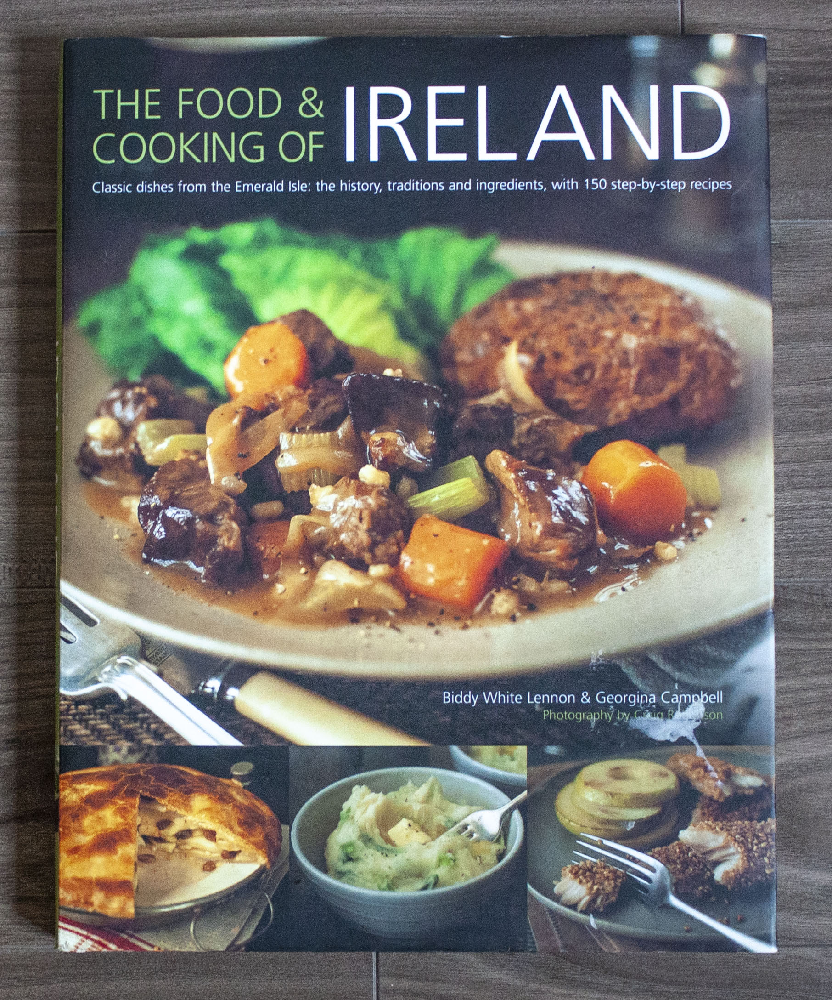
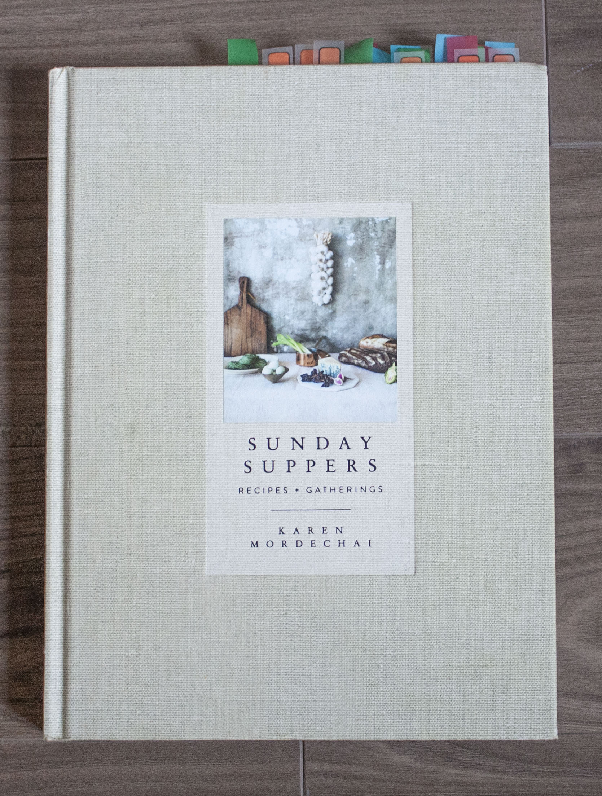

2 / 3

3 / 3


❮
❯
I'm not a collecting sort of person, but one thing I have way too many of is cookbooks. I love learning new ways to make food and planning, purchasing, chopping, portioning and cooking my way to tummy happiness. Each of the nine cookbooks in this website were chosen because I found a way to make food in them that was beyond normal satisfaction. If you make these recipes I hope you enjoy them as much as I do.